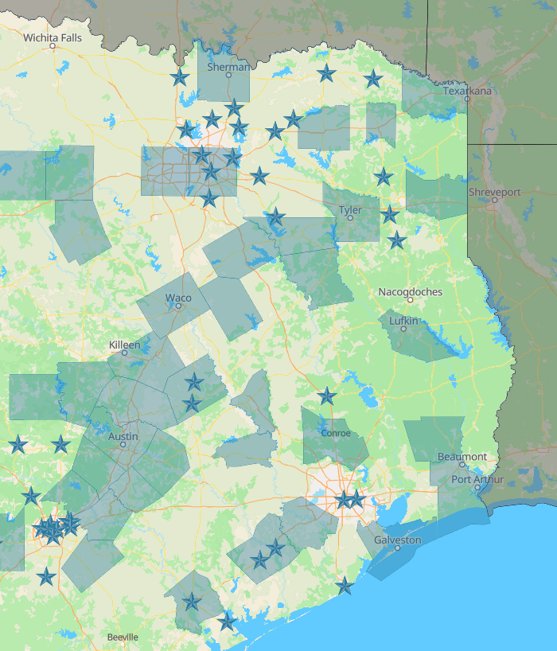

TX-PACE: Financing Resilience
💰 TX-PACE: Financing Our Future
Goal: To enable major facility upgrades with little to no upfront capital, using long-term energy and water savings to pay for the improvements.
📈 What is TX-PACE?
Property Assessed Clean Energy (TX-PACE) is a proven financial tool established by Texas legislation. It allows property owners—including non-profits and houses of worship—to upgrade aging infrastructure without the burden of a traditional bank loan or a major capital campaign.
- No Capital Outlay: Finance 100% of eligible project costs.
- Cash-Flow Positive: Projects are structured so that utility savings exceed the assessment payments.
- Long-Term Funding: Access private, affordable financing for 20–30 years.
- Property-Linked: The assessment is tied to the land, not the individual or the business, meaning the obligation transfers if the property is sold.
🛑 1. Discovery & Eligibility
Foundational steps to determine if TX-PACE is right for your parish.
Jurisdiction Check (Once)
- Verify Local Approval: TX-PACE must be established by your local government. Check the Texas PACE Authority Map to see if your county or city participates.
- Asset Assessment: Identify “permanent” improvements. PACE is designed for equipment and systems intended to decrease water or energy consumption or increase building resiliency.
⚠️ 2. Strategic Retrofits
High-impact systems that qualify for PACE financing.
Mechanical & Energy Upgrades (Once)
- HVAC & Controls: Replace aging chillers, boilers, and furnaces. Include modern Building Management Systems (BMS) or Energy Management Systems (EMS).
- Building Envelope: Finance high-efficiency roofing, windows, doors, and industrial-grade insulation.
- Lighting & Power: Comprehensive LED retrofits and elevator modernization.
Water Conservation (Once)
- Infrastructure: High-efficiency toilets, faucets, and greywater recycling systems.
- Irrigation: Commercial-grade irrigation equipment and large-scale rainwater collection systems.
✨ 3. Advanced Resilience
Transformational projects that secure the parish’s long-term environmental mission.
Distributed Generation
- Renewable Energy: Install large-scale solar arrays or wind turbines.
- Heat Recovery: Implement advanced heat recovery systems and steam traps to maximize thermal efficiency.
Strategic Planning (Annually)
- Portfolio Review: If the parish manages multiple buildings or a school, use TX-PACE to standardize efficiency across the entire campus.
- Financial Alignment: Work with the vestry to align PACE assessments with the church’s 10-year capital maintenance plan.
📊 Typical PACE-Eligible Improvements
| Energy Efficiency | Water Conservation | Distributed Generation |
|---|---|---|
| Chillers & Boilers | Toilets & Faucets | Solar Panels |
| HVAC Controls (BMS) | Irrigation Systems | Wind Turbines |
| Lighting & Windows | Rainwater Collection | Heat Recovery |
| Roofing & Insulation | Greywater Systems | Steam Traps |
Resource Links
Where is PACE available?
The highlighted counties, and the starred cities have active PACE programs.
